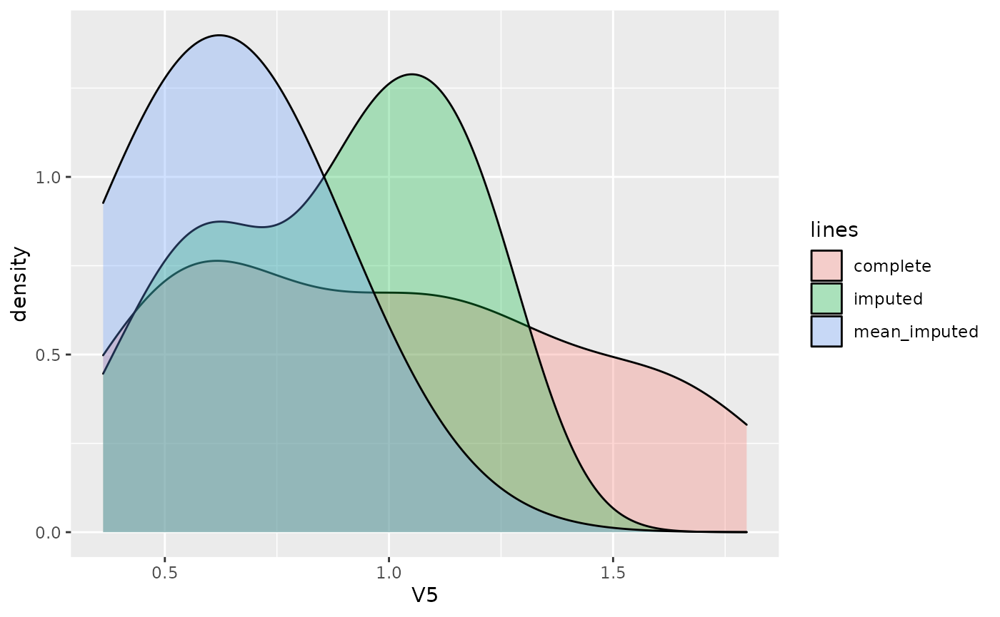
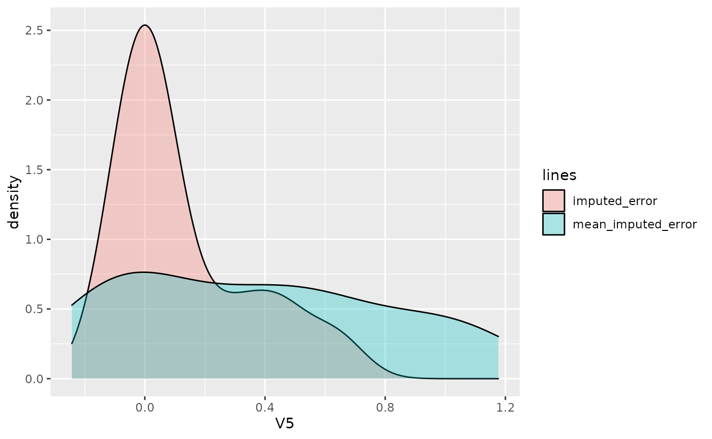

B_MissImp_Test.RmdIn the package, 100 rows of the abalone dataset is stored to test different functions.
load('../data/test_abalone.rda')
abalone_data <- data.frame(test_abalone)
col_num <- c(1:8)
col_dis <- c(8)
col_cat <- c(9)
for (j in col_num) {
if (j %in% col_dis) {
suppressWarnings(abalone_data[, j] <- as.integer(abalone_data[, j]))
}
else {
suppressWarnings(abalone_data[, j] <- as.numeric(abalone_data[, j]))
}
}
for (j in col_cat) {
abalone_data[, j][abalone_data[, j] == "?"] <- NA
suppressWarnings(abalone_data[, j] <- as.factor(abalone_data[, j]))
}
abalone_data <- stats::na.omit(abalone_data)
row.names(abalone_data) <- c(1:nrow(abalone_data))
head(abalone_data)## V2 V3 V4 V5 V6 V7 V8 V9 V1
## 1 0.455 0.365 0.095 0.5140 0.2245 0.1010 0.150 15 M
## 2 0.350 0.265 0.090 0.2255 0.0995 0.0485 0.070 7 M
## 3 0.530 0.420 0.135 0.6770 0.2565 0.1415 0.210 9 F
## 4 0.440 0.365 0.125 0.5160 0.2155 0.1140 0.155 10 M
## 5 0.330 0.255 0.080 0.2050 0.0895 0.0395 0.055 7 I
## 6 0.425 0.300 0.095 0.3515 0.1410 0.0775 0.120 8 IAfter loading and preprocessing the abalone dataset, we can create incomplete datasets with different mechanisms and proportions of missing data. Here for demonstration we chose the "MAR1" missing data mechanism and 20% missing data percentage. (More details about the generation of missing data could be found in vignette "A_Generate_Missingness_and_Tests_MCAR")
X.complete <- abalone_data
mech <- "MAR1"
miss_prop <- 0.3
rs <- generate_miss(X.complete, miss_prop, mechanism = mech)Then a model could be chosen to impute the incomplete dataset. The parameters shown below need to be chosen wisely.
df <- rs$X.incomp
df_complete <- X.complete
col_cat <- c(9)
col_dis <- c(8)
col_num <- c(1:8)
maxiter_tree <- 10
maxiter_pca <- 200
maxiter_mice <- 10
ncp_pca <- round(ncol(df_complete) / 2)
learn_ncp <- FALSE
num_mi <- 4
n_resample <- 4
n_df <- 5
imp_method <- "MI_Ranger"
resample_method <- "bootstrap"
cat_combine_by <- "onehot"
var_cat <- "wilcox_va"The initial incomplete dataset, the imputed dataset and the uncertainty for each imputed data are shown below as well as the performance matrices such as MSE(Mean Squared Error) for numerical columns and F1-score for the categorical ones (if the complete dataset is given).
There are two types of MSE that are calculated. The is the normal one that compares the L2 distance between the complete dataset and the imputed one. However, in this case, the columns with higher data values could weight more in MSE than other columns. So, for , before performing the calculation of MSE, the imputed data set and complete dataset are both scaled with Min-Max scale using the parameter from complete dataset.
It is also normal that some lines in are . This comes form the fact that there are too little number of resampled dataset (). If in all those resampled dataset, a certain line shows only once and thus is imputed only once, there is no calculation for the uncertainty of imputation.
head(df)## V2 V3 V4 V5 V6 V7 V8 V9 V1
## 1 NA 0.365 NA 0.5140 0.2245 0.1010 NA NA M
## 2 0.350 0.265 0.090 0.2255 0.0995 0.0485 0.070 7 M
## 3 0.530 0.420 0.135 0.6770 0.2565 0.1415 0.210 9 F
## 4 0.440 NA 0.125 0.5160 NA NA 0.155 10 M
## 5 0.330 0.255 0.080 0.2050 NA 0.0395 0.055 7 I
## 6 0.425 0.300 0.095 0.3515 0.1410 0.0775 0.120 8 I
head(res$imp)## V2 V3 V4 V5 V6 V7 V8 V9 V1
## 1 0.4619375 0.3650000 0.1244062 0.5140 0.22450000 0.1010000 0.1536979 9 M
## 2 0.3500000 0.2650000 0.0900000 0.2255 0.09950000 0.0485000 0.0700000 7 M
## 3 0.5300000 0.4200000 0.1350000 0.6770 0.25650000 0.1415000 0.2100000 9 F
## 4 0.4400000 0.3653906 0.1250000 0.5160 0.21551875 0.1091073 0.1550000 10 M
## 5 0.3300000 0.2550000 0.0800000 0.2050 0.07986215 0.0395000 0.0550000 7 I
## 6 0.4250000 0.3000000 0.0950000 0.3515 0.14100000 0.0775000 0.1200000 8 I
head(res$imp.disj)## V2 V3 V4 V5 V6 V7 V8 V9 V1_F
## 1 0.4619375 0.3650000 0.1244062 0.5140 0.22450000 0.1010000 0.1536979 9 0
## 2 0.3500000 0.2650000 0.0900000 0.2255 0.09950000 0.0485000 0.0700000 7 0
## 3 0.5300000 0.4200000 0.1350000 0.6770 0.25650000 0.1415000 0.2100000 9 1
## 4 0.4400000 0.3653906 0.1250000 0.5160 0.21551875 0.1091073 0.1550000 10 0
## 5 0.3300000 0.2550000 0.0800000 0.2050 0.07986215 0.0395000 0.0550000 7 0
## 6 0.4250000 0.3000000 0.0950000 0.3515 0.14100000 0.0775000 0.1200000 8 0
## V1_I V1_M
## 1 0 1
## 2 0 1
## 3 0 0
## 4 0 1
## 5 1 0
## 6 1 0
head(res$uncertainty)## V2 V3 V4 V5 V6 V7
## 1 0.0002126953 0.00000e+00 2.673828e-06 0 0.000000e+00 0.0000000000
## 2 0.0000000000 0.00000e+00 0.000000e+00 0 0.000000e+00 0.0000000000
## 3 0.0000000000 0.00000e+00 0.000000e+00 0 0.000000e+00 0.0000000000
## 4 0.0000000000 8.81958e-05 0.000000e+00 0 2.136945e-05 0.0001653547
## 5 0.0000000000 0.00000e+00 0.000000e+00 0 4.027100e-05 0.0000000000
## 6 0.0000000000 0.00000e+00 0.000000e+00 0 0.000000e+00 0.0000000000
## V8 V9 V1
## 1 6.56467e-07 0.6004253 -2.220446e-16
## 2 0.00000e+00 0.0000000 -2.220446e-16
## 3 0.00000e+00 0.0000000 -2.220446e-16
## 4 0.00000e+00 0.0000000 -2.220446e-16
## 5 0.00000e+00 0.0000000 -2.220446e-16
## 6 0.00000e+00 0.0000000 -2.220446e-16
head(res$uncertainty.disj)## V2 V3 V4 V5 V6 V7
## 1 0.0002126953 0.00000e+00 2.673828e-06 0 0.000000e+00 0.0000000000
## 2 0.0000000000 0.00000e+00 0.000000e+00 0 0.000000e+00 0.0000000000
## 3 0.0000000000 0.00000e+00 0.000000e+00 0 0.000000e+00 0.0000000000
## 4 0.0000000000 8.81958e-05 0.000000e+00 0 2.136945e-05 0.0001653547
## 5 0.0000000000 0.00000e+00 0.000000e+00 0 4.027100e-05 0.0000000000
## 6 0.0000000000 0.00000e+00 0.000000e+00 0 0.000000e+00 0.0000000000
## V8 V9 V1_F V1_I V1_M
## 1 6.56467e-07 0.6004253 0 0 0
## 2 0.00000e+00 0.0000000 0 0 0
## 3 0.00000e+00 0.0000000 0 0 0
## 4 0.00000e+00 0.0000000 0 0 0
## 5 0.00000e+00 0.0000000 0 0 0
## 6 0.00000e+00 0.0000000 0 0 0
res$MSE## $list_MSE
## [1] 0.6995555 1.9214132 1.4630506 1.0283104
##
## $Mean_MSE
## [1] 1.278082
##
## $Variance_MSE
## [1] 0.2817224
##
## $list_MSE_scale
## [1] 0.01629414 0.04060260 0.03449230 0.01779064
##
## $Mean_MSE_scale
## [1] 0.02729492
##
## $Variance_MSE_scale
## [1] 0.0001467484
res$F1## $list_F1
## [1] 0.3636364 0.6666667 0.5000000 0.5294118
##
## $Mean_F1
## [1] 0.5149287
##
## $Variance_F1
## [1] 0.0154488At last, we perform a simple mean imputation as the baseline imputation method. After choosing a certain column (V5 in the example), we can compare the density distribution of the missing values, the imputed values by the method chosen above and the mean imputed values.
res_mean_imp <- df
col_num <- c(1:8)
col_num_name <- colnames(df)[col_num]
for (y in col_num_name) {
res_mean_imp[[y]][is.na(res_mean_imp[[y]])] <- mean(res_mean_imp[[y]], na.rm = TRUE)
}
ycol <- "V5"
X.miss <- X.complete
X.miss[!is.na(df)] <- NA
dat <- data.frame(
y = c(X.complete[[ycol]][rs$R.mask[[ycol]]], res$imp[[ycol]][rs$R.mask[[ycol]]], res_mean_imp[[ycol]][rs$R.mask[[ycol]]]),
lines = rep(c("complete", "imputed", "mean_imputed"), each = sum(rs$R.mask[[ycol]]))
)
ggplot2::ggplot(dat, ggplot2::aes(x = y, fill = lines)) +
ggplot2::geom_density(alpha = 0.3) +
ggplot2::labs(x = ycol)
dat <- data.frame(
y = c(X.miss[[ycol]][rs$R.mask[[ycol]]] - res$imp[[ycol]][rs$R.mask[[ycol]]], X.miss[[ycol]][rs$R.mask[[ycol]]] - res_mean_imp[[ycol]][rs$R.mask[[ycol]]]),
lines = rep(c("imputed_error", "mean_imputed_error"), each = sum(rs$R.mask[[ycol]]))
)
ggplot2::ggplot(dat, ggplot2::aes(x = y, fill = lines)) +
ggplot2::geom_density(alpha = 0.3) +
ggplot2::labs(x = ycol)
#dat <- data.frame(
# y = c(X.miss[[ycol]], df[[ycol]]),
# lines = rep(c("missing", "observed"), each = length(df[[ycol]]))
#)
#ggplot2::ggplot(dat, ggplot2::aes(x = y, fill = lines)) +
# ggplot2::geom_density(alpha = 0.3) +
# ggplot2::labs(x = ycol)